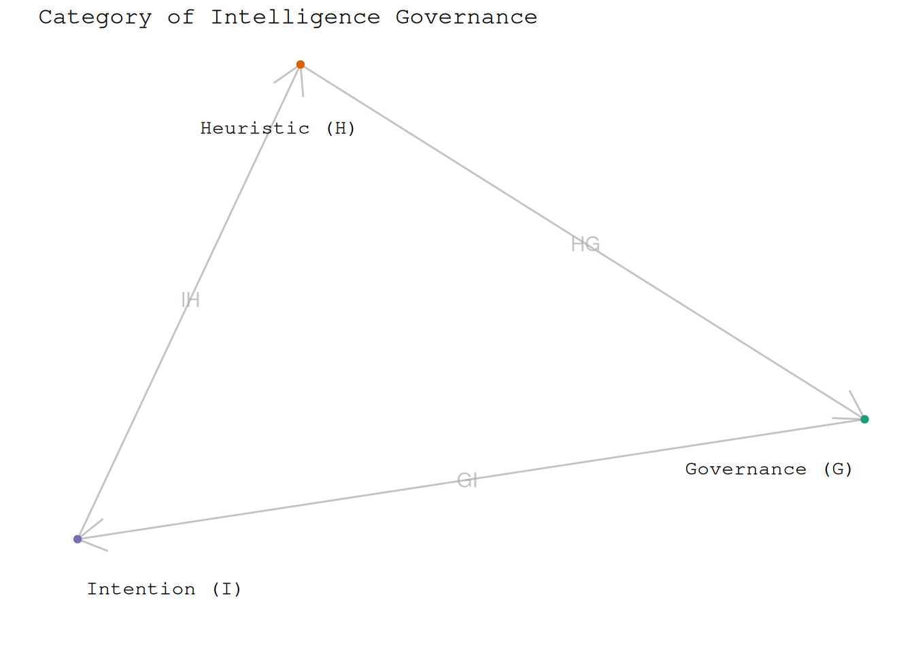
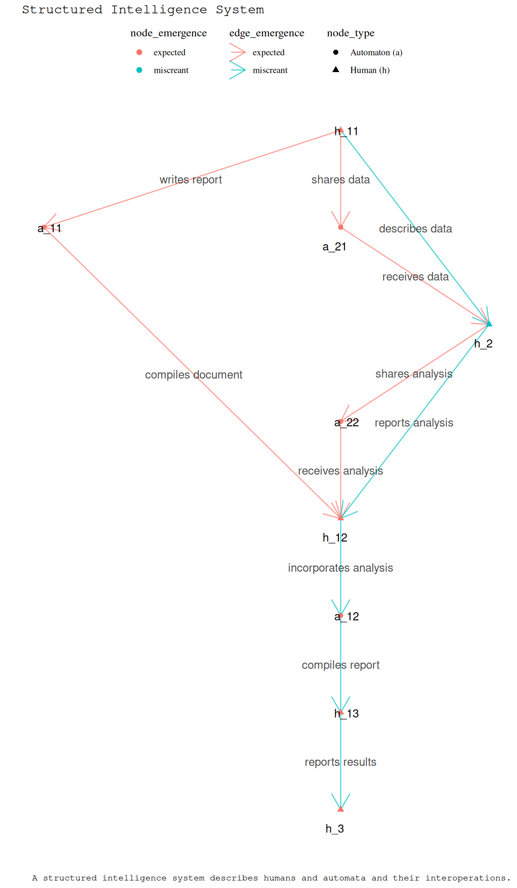
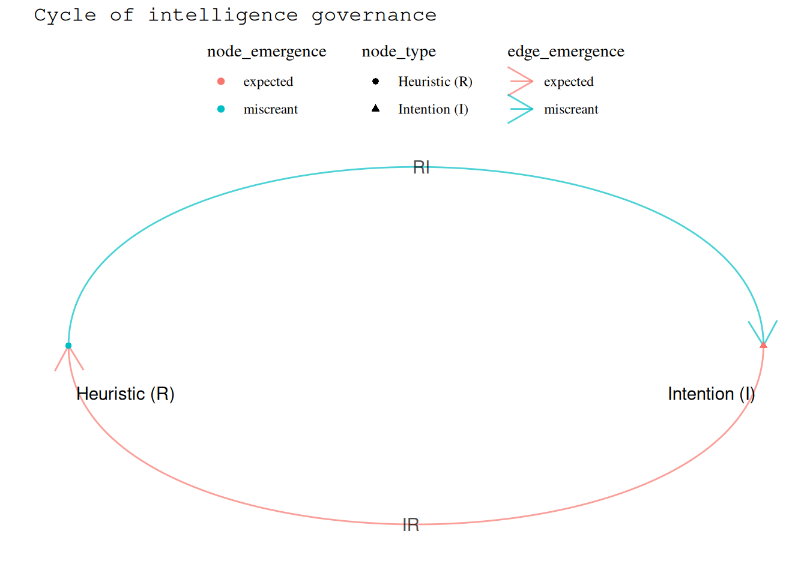

I_edges# A tibble: 2 × 4
from to edge_emergence edge_label
<chr> <chr> <fct> <chr>
1 R I miscreant RI
2 I R expected IR Dr Charles T. Gray, Datapunk ![]()
Without ways of bounding and measuring how technology affects us, we have no chance of governing the choas of technology in our lives.
I want to know what we know, so that we know how much we don’t know. Because right now I think we all have structured intelligence governance levels in violation of the laws of robotics.
Why aren’t there fines for this? Maybe because no one knows how to measure it.
hi Tomasz, Richard, Kerrie, Sira, & friends! Thanks for taking a look.
Look, I’m just a data engineer who studied a skerrick of math a while back, I’m just doing this because it’s coming out; a mathematical scream at how notifications are decreasing my capacity to function as a human.
But, this argument only uses first principles.
Motivation for this project began with finding that despite mastering the digraph-structured planning tool JIRA; I was still utterly unable to manage the generativity nor complexity of the subgraphs, as development progresses.
All I wanted to do was construct a structure-preserving, dimension-reducing living morphism that monitored these things. What follows is a string I cannot stop pulling.
The digraph of intelligence governance is a discrete topological dynamical system that governs emergence for human wellbeing in a structured intelligence system.
Consider this system in terms of three things:
A category-theoretic way of measuring the stabilty of the system might be to ask:
How many of the people, machines, and relationships between are operational?
A intelligence-governance question might be to ask:
Which people, machines, or relationships are exhibiting an emergent behaviour that is harming the humans in the system?
We will use code examples to explain mathematical structures.
We begin by constructing the digraph as a computational object I_vis, a ggraph visualisation of the category.
I_edges# A tibble: 2 × 4
from to edge_emergence edge_label
<chr> <chr> <fct> <chr>
1 R I miscreant RI
2 I R expected IR I_nodes# A tibble: 2 × 4
node node_label node_type node_emergence
<chr> <chr> <chr> <chr>
1 R Heuristic (R) Heuristic (R) miscreant
2 I Intention (I) Intention (I) expected I_graph# A tbl_graph: 2 nodes and 2 edges
#
# A directed simple graph with 1 component
#
# Node Data: 2 × 4 (active)
name node_label node_type node_emergence
<chr> <chr> <chr> <chr>
1 R Heuristic (R) Heuristic (R) miscreant
2 I Intention (I) Intention (I) expected
#
# Edge Data: 2 × 4
from to edge_emergence edge_label
<int> <int> <chr> <chr>
1 1 2 miscreant RI
2 2 1 expected IR I_vis 
To show this is true, we will need to:
A structured intelligence system is a directed graph representing humans and automata interoperating toward some intention with objects and morphisms.
humans[1] "h_1" "h_2" "h_3"automata[1] "a_1" "a_2"S_edges# A tibble: 11 × 4
from to edge_label edge_emergence
<chr> <chr> <chr> <chr>
1 h_11 a_11 writes report expected
2 h_11 a_21 shares data expected
3 h_11 h_2 describes data miscreant
4 a_11 h_12 compiles document expected
5 a_21 h_2 receives data expected
6 h_2 a_22 shares analysis expected
7 a_22 h_12 receives analysis expected
8 h_2 h_12 reports analysis miscreant
9 h_12 a_12 incorporates analysis miscreant
10 a_12 h_13 compiles report miscreant
11 h_13 h_3 reports results miscreant S_nodes # A tibble: 9 × 4
node node_type node_label node_emergence
<chr> <chr> <chr> <chr>
1 h_11 Human (h) h_11 expected
2 a_11 Automaton (a) a_11 expected
3 a_21 Automaton (a) a_21 expected
4 h_2 Human (h) h_2 miscreant
5 a_22 Automaton (a) a_22 expected
6 h_12 Human (h) h_12 expected
7 a_12 Automaton (a) a_12 expected
8 h_13 Human (h) h_13 expected
9 h_3 Human (h) h_3 expected S_graph# A tbl_graph: 9 nodes and 11 edges
#
# A directed acyclic simple graph with 1 component
#
# Node Data: 9 × 4 (active)
name node_type node_label node_emergence
<chr> <chr> <chr> <chr>
1 h_11 Human (h) h_11 expected
2 a_11 Automaton (a) a_11 expected
3 a_21 Automaton (a) a_21 expected
4 h_2 Human (h) h_2 miscreant
5 a_22 Automaton (a) a_22 expected
6 h_12 Human (h) h_12 expected
7 a_12 Automaton (a) a_12 expected
8 h_13 Human (h) h_13 expected
9 h_3 Human (h) h_3 expected
#
# Edge Data: 11 × 4
from to edge_label edge_emergence
<int> <int> <chr> <chr>
1 1 2 writes report expected
2 1 3 shares data expected
3 1 4 describes data miscreant
# ℹ 8 more rowsS_vis 
We invoke human in the conventional sense of the term and note that humans self-generate intention.
An intention requires human thought and is self-generating.
An automaton , with heuristics (rules written by humans) , transforms human intention and to some output . An automata does not have intention innately, only rules. For the purposes of this framework, we will generally think of an automataton as an object.
So, we now have automata interoperating with people. Think of The Matrix (Wachowski and Wachowski 1999) as a metaphor for our systems of technology in which humans are overwhemed by emergences. And, as Dr Salvin Calvin rightly observed in Robot Dreams (Asimov 1950), any robot in violation of the three laws must be immediately terminated.
As defined by Asimov in I, Robot (Asimov 1950).
We must govern structured intelligence systems to ensure they do not harm humans. And we must learns from the metaphors, in particular the metanyms deconstructed in critical theory, to construct rigorous categorical frameworks that can be computationally and ethically applied to structural intelligence systems.
Adapted from the three laws.
This leads us to the question, how might we detect if a system is in violation of the laws?
Without loss of generality, consider a large-scale project on the modern data stack involving many people and computational tools they use.
Any developer, or any person on a team for that matter, will tell you that at kick off, leadership are convinced that the plan is well defined. However, any developer will also tell you they’ve never seen a well-defined plan. Every developer is living in a singularity of tasks that are required to be computationally isolated, perhaps change a number from 3to 4 i n particular file. All of these tasks are meant to reassemble into leadership’s vision. Despite the advances of agile, chaos still reigns. Development tasks are dinosaurs in the Jurassic Park of structured intelligence systems.
The result of ungoverned structured intelligence systems? Developers are blamed and traumatised by unfair demands; the wellbeing of humans in the system they interoperate within, the singularity, is not considered. This is shredding the very talent we need to solve critical problems facing humanity, such as climate change and inequality.
We consider the elements preimage of to display emergence in one of four ways:
So that
under the order shown in Figure Figure 1.
The category (“Category Theory” 2025) of structured intelligence governance is isomorphic to cycle with loops comprising:
G_edges# A tibble: 2 × 4
from to edge_emergence edge_label
<chr> <chr> <chr> <chr>
1 H A expected HA
2 A H miscreant AH G_nodes# A tibble: 2 × 4
node node_type node_emergence node_label
<chr> <chr> <chr> <chr>
1 H H expected H
2 A A miscreant A G_graph# A tbl_graph: 2 nodes and 2 edges
#
# A directed simple graph with 1 component
#
# Node Data: 2 × 4 (active)
name node_type node_emergence node_label
<chr> <chr> <chr> <chr>
1 H H expected H
2 A A miscreant A
#
# Edge Data: 2 × 4
from to edge_emergence edge_label
<int> <int> <chr> <chr>
1 1 2 expected HA
2 2 1 miscreant AH Warning in matrix(c(0, rep(0, dim - 1), 1, rep(0, dim - 2)), 2, dim, byrow =
TRUE): data length [3] is not a sub-multiple or multiple of the number of rows
[2]The cycle of intelligence governence comprises:
I_vis
A technololgical singularity is when the cycle of intelligence governance displays emergence beyond a constraint threshold for human governance. A singularity may be above a virtuous threshold, miscreant threshold, or a mix of both.
Define a metric on that aggregates the emergence of a structured intelligence system
where denotes the periodicity of the cycle in , and denotes the time elapsed.
A singularity in which virtuous E >> miscreant E.
A singularity in which miscreant E >> virtuous E.
A singularity in which there exists a violation of the laws.
We say a singularity has violated Law 1. of the laws fo structured intelligence governance when there exist a non-empty subset of with emergence severity violation.
We say a singularity has violated Law 2. when contains elements of .
We say a singularity has violated Law 3. when there are morphisms with unexpected output.